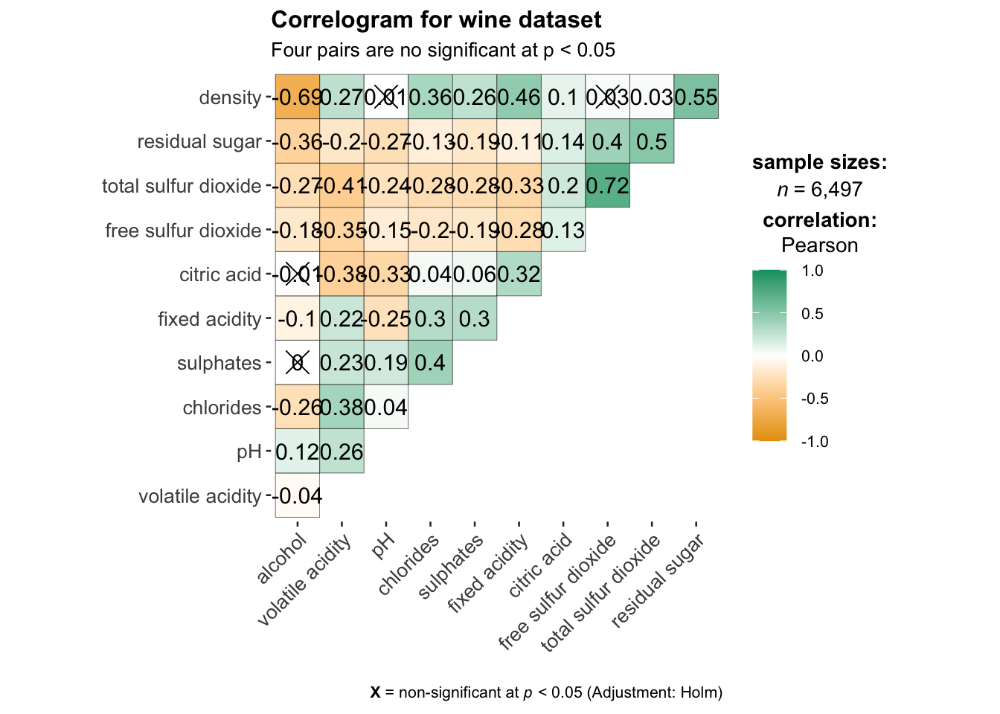

pacman::p_load(corrplot, ggstatsplot, tidyverse)Corrplot
Installing and launching R packages
Before you get started, you are required:
to start a new R project, and
to create a new R Markdown document.
Next, you will use the code chunk below to install and launch corrplot, ggpubr, plotly and tidyverse in RStudio.
Importing and Preparing The Data Set
In this hands-on exercise, the Wine Quality Data Set of UCI Machine Learning Repository will be used. The data set consists of 13 variables and 6497 observations. For the purpose of this exercise, we have combined the red wine and white wine data into one data file. It is called wine_quality and is in csv file format.
Importing Data
First, let us import the data into R by using read_csv() of readr package.
wine <- read_csv("data/wine_quality.csv")Notice that beside quality and type, the rest of the variables are numerical and continuous data type.
Building Correlation Matrix: pairs() method
There are more than one way to build scatterplot matrix with R. In this section, you will learn how to create a scatterplot matrix by using the pairs function of R Graphics.
Before you continue to the next step, you should read the syntax description of pairsfunction.
Building a basic correlation matrix
Figure below shows the scatter plot matrix of Wine Quality Data. It is a 11 by 11 matrix.
pairs(wine[,1:11])
Visualising Correlation Matrix: ggcormat()
One of the major limitation of the correlation matrix is that the scatter plots appear very cluttered when the number of observations is relatively large (i.e. more than 500 observations). To over come this problem, Corrgram data visualisation technique suggested by D. J. Murdoch and E. D. Chow (1996) and Friendly, M (2002) and will be used.
The are at least three R packages provide function to plot corrgram, they are:
On top that, some R package like ggstatsplot package also provides functions for building corrgram.
In this section, you will learn how to visualising correlation matrix by using ggcorrmat() of ggstatsplot package.
The basic plot
One of the advantage of using ggcorrmat() over many other methods to visualise a correlation matrix is it’s ability to provide a comprehensive and yet professional statistical report as shown in the figure below.
ggcorrmat(
data = wine,
cor.vars = 1:11
)
ggstatsplot::ggcorrmat(
data = wine,
cor.vars = 1:11,
ggcorrplot.args = list(outline.color = "black",
hc.order = TRUE,
tl.cex = 10),
title = "Correlogram for wine dataset",
subtitle = "Four pairs are no significant at p < 0.05"
)
Building multiple plots
Since ggstasplot is an extension of ggplot2, it also supports faceting. However the feature is not available in ggcorrmat() but in the grouped_ggcorrmat() of ggstatsplot.
grouped_ggcorrmat(
data = wine,
cor.vars = 1:11,
grouping.var = type,
type = "robust",
p.adjust.method = "holm",
plotgrid.args = list(ncol = 2),
ggcorrplot.args = list(outline.color = "black",
hc.order = TRUE,
tl.cex = 10),
annotation.args = list(
tag_levels = "a",
title = "Correlogram for wine dataset",
subtitle = "The measures are: alcohol, sulphates, fixed acidity, citric acid, chlorides, residual sugar, density, free sulfur dioxide and volatile acidity",
caption = "Dataset: UCI Machine Learning Repository"
)
)Visualising Correlation Matrix using corrplot Package
In this hands-on exercise, we will focus on corrplot. However, you are encouraged to explore the other two packages too.
Before getting started, you are required to read An Introduction to corrplot Package in order to gain basic understanding of corrplot package.
Getting started with corrplot
Before we can plot a corrgram using corrplot(), we need to compute the correlation matrix of wine data frame.
In the code chunk below, cor() of R Stats is used to compute the correlation matrix of wine data frame.
wine.cor <- cor(wine[, 1:11])Next, corrplot() is used to plot the corrgram by using all the default setting as shown in the code chunk below.
corrplot(wine.cor)
Notice that the default visual object used to plot the corrgram is circle. The default layout of the corrgram is a symmetric matrix. The default colour scheme is diverging blue-red. Blue colours are used to represent pair variables with positive correlation coefficients and red colours are used to represent pair variables with negative correlation coefficients. The intensity of the colour or also know as saturation is used to represent the strength of the correlation coefficient. Darker colours indicate relatively stronger linear relationship between the paired variables. On the other hand, lighter colours indicates relatively weaker linear relationship.
Combining corrgram with the significant test
In statistical analysis, we are also interested to know which pair of variables their correlation coefficients are statistically significant.
With corrplot package, we can use the cor.mtest() to compute the p-values and confidence interval for each pair of variables. We can then use the p.mat argument of corrplot function as shown in the code chunk below.
wine.sig = cor.mtest(wine.cor, conf.level= .95)
corrplot(wine.cor,
method = "number",
type = "lower",
diag = FALSE,
tl.col = "black",
tl.srt = 45,
p.mat = wine.sig$p,
sig.level = .05)
Reorder a corrgram
Matrix reorder is very important for mining the hiden structure and pattern in a corrgram. By default, the order of attributes of a corrgram is sorted according to the correlation matrix (i.e. “original”). The default setting can be over-write by using the order argument of corrplot(). Currently, corrplot package support four sorting methods, they are:
“AOE” is for the angular order of the eigenvectors. See Michael Friendly (2002) for details.
“FPC” for the first principal component order.
“hclust” for hierarchical clustering order, and “hclust.method” for the agglomeration method to be used.
- “hclust.method” should be one of “ward”, “single”, “complete”, “average”, “mcquitty”, “median” or “centroid”.
“alphabet” for alphabetical order.
“AOE”, “FPC”, “hclust”, “alphabet”. More algorithms can be found in seriation package.
corrplot.mixed(wine.cor,
lower = "ellipse",
upper = "number",
tl.pos = "lt",
diag = "l",
order="AOE",
tl.col = "black")
Reordering a correlation matrix using hclust
If using hclust, corrplot() can draw rectangles around the corrgram based on the results of hierarchical clustering.
corrplot(wine.cor,
method = "ellipse",
tl.pos = "lt",
tl.col = "black",
order="hclust",
hclust.method = "ward.D",
addrect = 3)Strong correlation between free sulfur dioxide and total sulfur dioxide